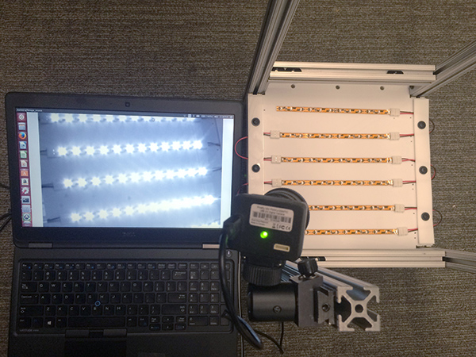
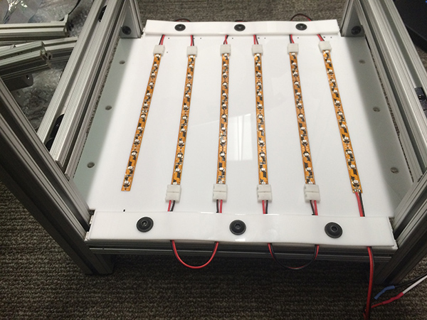

Multi tracker
Multi tracker is a basic ROS package for real time tracking multiple objects in 2D. Primary testing has been on walking fruit flies. Only basic object-object interaction is supported by splitting objects that are larger than a specified size into two objects (thus three objects coming together will only be seen as 2 objects). Adjusting thresholds, and the image processing function can help improve robustness. System works reliably on a high end desktop from 2012 to track 10+ objects. The code supports multiple tracking instances on the computer through the "nodenum" option that is available on all the tracking nodes.
Below is a video that shows raw footage on the left, and the realtime output from the liveviewer.py node on the right.
The package was built and tested with point grey usb firefly cameras on an Ubuntu (12.04) system, and Basler GigE cameras using the camera aravis driver on 12.04 and 14.04. However, there is no reason that it shouldn't work with other cameras.
Installing
Install ROS, if you have not already done so (tested with ros hydro, full desktop install): http://wiki.ros.org/hydro/Installation/Ubuntu
Setup your catkin workspace, if you have not already done so: http://wiki.ros.org/catkin/Tutorials/create_a_workspace
Then clone the git repository and run catkin make:
$ cd ~/catkin_ws/src
$ git clone https://github.com/florisvb/multi_tracker.git
$ cd ~/catkin_ws
$ catkin_makeCameras
Point grey usb camera
Install the appropriate camera driver, such as: http://wiki.ros.org/pointgrey_camera_driver. To talk to the camera, you may need a udev rule. There is an example udev rule for a point grey firefly camera in the rules folder. Move this file to /etc/udev/rules.d directory.
Basler GigE camera / Camera Aravis
See aravis_install_notes
Analysis
To use the analysis tools: from inside multi_tracker, run python ./setup.py install. You may want to do this in a virtual environment: http://docs.python-guide.org/en/latest/dev/virtualenvs/
Analysis tools currently rely on pandas and hdf5 file formats.
Overview
Parameters
(examples are found in the /demo folder)
camera_parameters.yaml: specifies key camera parameters, such as framerate, exposure time, etc. These parameter names may be camera brand dependent. The camera parameters can also be specified by running rosrun rqt_reconfigure rqt_reconfigure
tracker_parameters.yaml: specifies various tracking related parameters
data_association_parameters.yaml: specifies various data association related parameters
kalman_parameters.py: specifies the kalman parameters
Nodes
tracker_simplebuffer.py
listens to /camera/image_mono (or whatever topic is specified in tracker_parameters.yaml), and uses the image processing routine specified in tracker_parameters.yaml to find the outer most contours of objects in the tracking space. Publishes a list of contours each frame, including x,y position, angle, and area.
data_association.py
listens to the /multi_tracker/n/contours topic and runs a simple kalman filter to do data association and filtering between subsequent frames. Publishes tracked objects to /multi_tracker/n/tracked_objects
save_data_to_hdf5.py
listens to /multi_tracker/n/tracked_objects and saves the data to an h5 file. Alternatively, one can use "rosbag record" to record the data in ros format, which can replayed at a later time. Very rarely, not not never, does this node crash. For critical data, I recommend using rosbag record as a backup.
liveviewer.py
Listens to the camera topic specified in liveviewer_parameters.yaml, and overlays the tracked objects from the /multi_tracker/n/tracked_objects. Use the topic /multi_tracker/n/processed_image to see the tracking overlaid on the processed image from which the contours are calculated. This can help with debugging and optimizing the tracker parameters.
delta_video_simplebuffer.py
Listens to the camera topic specified in delta_video_parameters.yaml, and saves the pixels and values for any pixels that change more than the specified threshold. This results in a dramatically compressed filesize relative to a full resolution video. Artifacts are kept at an absolute minimum. Using a threshold of 10, and tracking 10 flies, 20 hours of 30 fps video comes to 20-40 GB.
delta_video_player.py
This node will replay a saved delta_video stream.
save_bag.py
Automatically starts and stops saving a rosbag file. Requires a config file. See raw_data_bag_config.py in the demo for a template.
republish_pref_obj_data.py
Republishes data from the oldest tracked object using a standard ROS message type (subject to change!). This is useful if doing a closed loop experiment with a single target.
Running
Minimal steps to run:
- copy the /demo folder to your home directory
- get a camera running on the ROS network (see Cameras above), note the image topic it is publishing to
- if the camera_image topic is not /camera/image_raw, edit the /demo/demo_1/src/tracker_parameters.yaml file so that /multi_tracker/1/tracker/image_topic matches the image_topic. For color cameras, it is best to use the camera/image_mono topic, if it exists.
- from inside ~/demo/demo_1/src folder, run "roslaunch tracking_launcher.launch" This will load all the yaml (parameter) files, and launch the tracker, data_association, save_hdf5_data, and liveviewer nodes.
- Hit control-c to stop the node (and cease collecting data).
Now you can try editing some of the contents of the yaml files to change the file structure and tracking parameters.
The two demo folders (demo_1 and demo_2) are there to illustrate how you can run two instances on one computer in parallel. You can even run them on the same camera feed, using ROI's to split a single camera feed into two experiments.
Image Processing
The code supports externally defined image processing functions, so you can write your own python image processing function, and specify the tracker to use that, rather than the default functions included in this package. To define your own image processing functions, set the parameter /multi_tracker/1/tracker/image_processing_module to be the exact path to your python file, and /multi_tracker/1/tracker/image_processor to the name of the function within that file.
To write your own image_processing function, look at the incredibly_basic function in image_processing.py, and start with this as a template. Don't forget to import some of the ROS specific stuff:
from multi_tracker.msg import Contourinfo, Contourlist from multi_tracker.msg import Trackedobject, Trackedobjectlist from multi_tracker.srv import resetBackgroundService
Alternatively, you can edit the image_processing.py file in multi_tracker/nodes, and add your function there. Then set /multi_tracker/1/tracker/image_processor to the name of your function.
Lighting
For our experiments, we typically use infrared lighting, which is invisible to human and most animal eyes, however, cameras (with the IR blocking filter removed) are exceptionally sensitive to this wavelength. This allows us to (a) image the animals independent of ambient lighting, and (b) independent of any visible light motion that may be used as an experimental cue. Infrared panels can be purchased, however, they are excessively expensive (~$800-1200). Below are instructions on how to make one for <$50.
 Lighting parts list (note: parts ship from China, express shipping takes ~1-2 weeks to Los Angeles):- 850 nm LED reel
- Connectors for LED strips (1 for each strip)
- Power supply (1-3 A depending on the total length
Cut the reel at the designated cut points and attach the connectors to the appropriate +/- terminals to link multiple strips. In the example below, I have attached the strips to a sheet of laser cut acrylic, and use two additional pieces of acrylic to prevent the connector cables from moving.
